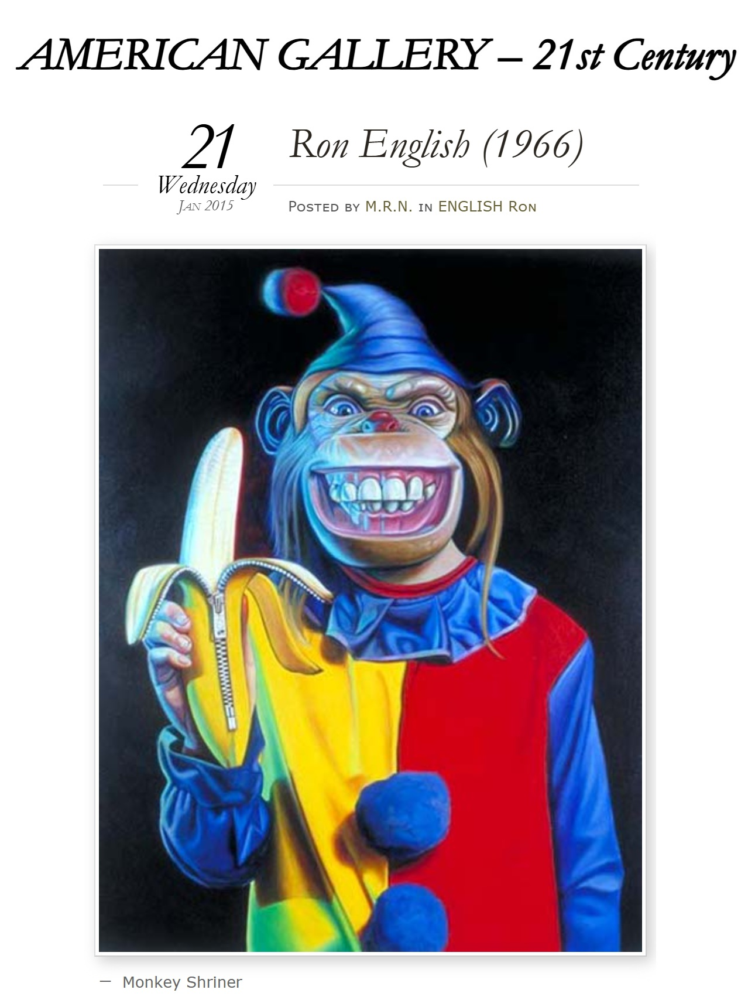

Exhibitions
Big Men in Little Cars, Tin Man Alley, New Hope, Pennsylvania, US, January 10–February 15, 1998.
Literature
Ron English, Abject Expressionism: The Art of Ron English (San Francisco: Last Gasp, 2007), p. 168. ISBN 978-0867196894.

Ron English, Original Grin: The Art of Ron English (Paris: Cernunnos, 2019), p. 101. ISBN 978-2374950938.

Articulate. Ron English, “The Second Coming of Daniel Johnston,” Articulate, issue 28, 1998.

Carbon 14. “Ron English,” Carbon 14, no. 25, 2004.

Блинцов, “Ron English поп-арт, клоунада и стёб”, Art Assorty, January 23, 2013.

Guo Ruoxi, “Ron English ‘Sugar Circus’ Global Premiere Lands in Shenzhen,” Hong Kong Wen Wei Po, November 12, 2021.
Provenance
Collection of the artist.
Notes
This work appears in online coverage of Ron English’s Sugar Circus exhibition in Shenzhen.
Ancillary Documentation


Selected Online Circulation
Selected examples of the work’s online circulation, reproduction, or discussion. This list is not exhaustive; it is intended to document representative appearances of the image beyond formal exhibition and publication records.